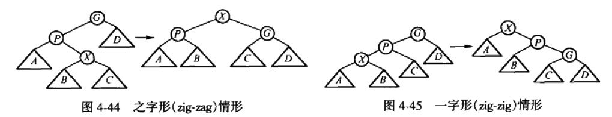
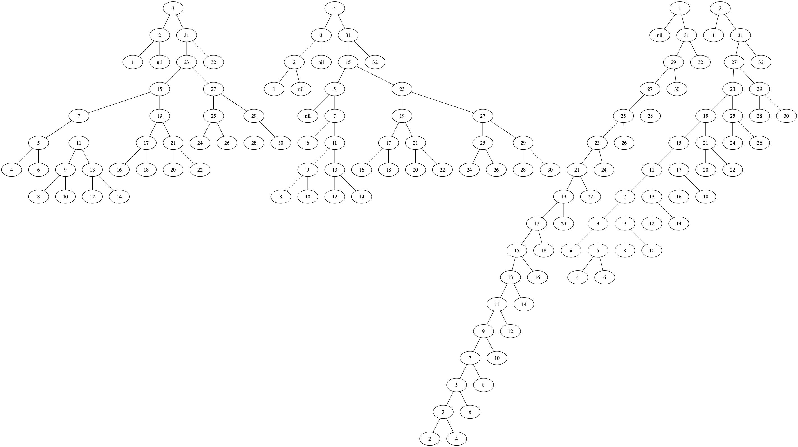

伸展树(splay tree)的可视化
参考书籍 《[数据结构与算法分析_Java语言描述(第2版)].韦斯》code on github
按照书里面的方法，伸展树里面不能像AVL那样直接在某个节点上旋转，而必须考虑父节点和祖父节点。 所以这就加大了实现难度，如果我们不存储某个节点的父节点和祖父节点的话，那么必须在遍历的时候 找到孙子节点（这样当前节点就是祖父节点，下一个节点就是父节点）。
另外伸展树需要区分对待zig-zag和zig-zig的情况，这点书里面给了具体的示例

书里面给了一个具体示例，首先插入1-32所有数字并且确保都在左子树上（所以插入顺序必须是逆序）。 然后分别遍历1-7这些数字观察树的旋转情况。只要数字在树里面，那么每次访问数字最终都能到根节点上。 虽然我的代码跑这个结果和书里面的不太一样，但是我觉得我的更好(不过没有完整测试，可能还是有bug)
def uplift_left(r, rl):
r.left = rl.right
rl.right = r
return rl
def uplift_right(r, rr):
r.right = rr.left
rr.left = r
return rr
def left_zig_zig(r, rl, rll):
rl.left = rll.right
r.left = rl.right
rl.right = r
rll.right = rl
return rll
def left_zig_zag(r, rl, rll):
rl.right = rll.left
r.left = rll.right
rll.left = rl
rll.right = r
return rll
def right_zig_zig(r, rr, rrr):
rr.right = rrr.left
r.right = rr.left
rr.left = r
rrr.left = rr
return rrr
def right_zig_zag(r, rr, rrl):
r.right = rrl.left
rr.left = rrl.right
rrl.left = r
rrl.right = rr
return rrl
def access_tree_node(r: TreeNode, val):
if r is None or r.val == val:
return r
if val < r.val:
rl = r.left
if rl is None:
return r
elif val == rl.val:
return uplift_left(r, rl)
elif val < rl.val:
rll = rl.left
if rll is None:
return uplift_left(r, rl)
else:
rll = rl.left = access_tree_node(rll, val)
return left_zig_zig(r, rl, rll)
else:
rlr = rl.right
if rlr is None:
return uplift_left(r, rl)
else:
rlr = rl.right = access_tree_node(rlr, val)
return left_zig_zag(r, rl, rlr)
else:
rr = r.right
if rr is None:
return r
elif val == rr.val:
return uplift_right(r, rr)
elif val < rr.val:
rrl = rr.left
if rrl is None:
return uplift_right(r, rr)
else:
rrl = rr.left = access_tree_node(rrl, val)
return right_zig_zag(r, rr, rrl)
else:
rrr = rr.right
if rrr is None:
return uplift_right(r, rr)
else:
rrr = rr.right = access_tree_node(rrr, val)
return right_zig_zig(r, rr, rrr)
raise RuntimeError('unexpected condition')
为了能够很好地观察树的变化，最好能够以可视化的方式将树展示出来（最好是图片或者是动画，而不是字符）。 所以我编写了一个工具，可以将树输出成为.dot格式，然后使用graphviz输出成为图片。另外graphviz不支持 输出多个graph, 如果要将多个graph放在一个图片里面需要使用gvpack工具。具体代码可以看 tree_util.py.
驱动方式也很简单：
- 创建一个stream/stringio
- 调用 `tree_to_dot` 传入节点，graph名称和stream
- 最后将stream输出并且调用gvpack+graphviz产生图片。
def test_pprint_tree():
root = None
stream = StringIO()
for val in range(32, 0, -1):
root = insert_tree_node(root, TreeNode(val))
for x in (1,2,3,4):
root = access_tree_node(root, x)
tree_to_dot(root, 'find {}'.format(x), stream)
dot_to_graph('/tmp/example', stream.getvalue(), type='png')
test_pprint_tree()
